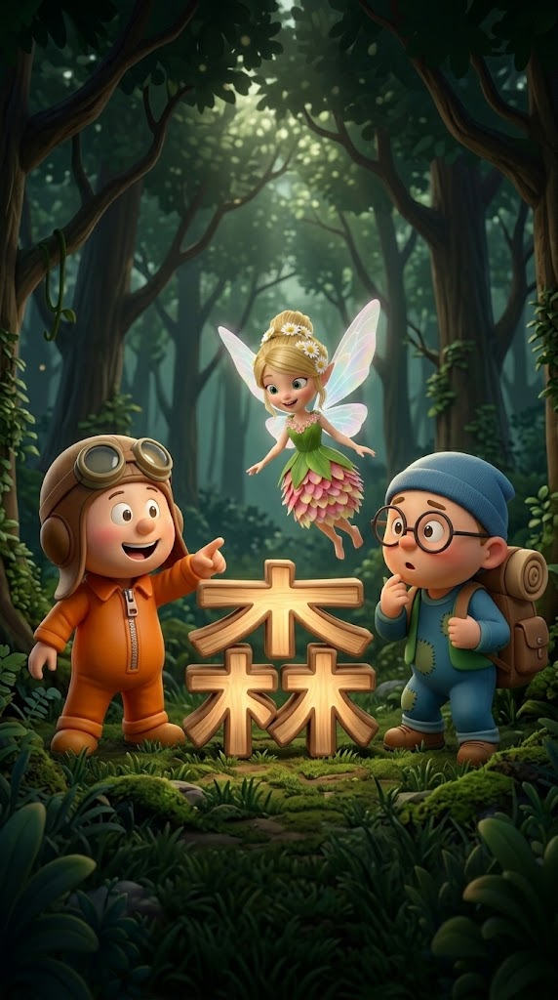

ミミ・トト・リリーと いっしょに
よんで、見つけて、漢字と なかよくなろう
学年と あそびかたを えらんでね。いくつかえらぶと、問題ごとにランダムに変わるよ。
手書きの「ぜんぶ」は、その学年の漢字をすべて出すよ。
ひとつ以上 えらんでね。
□ の中に ゆびや ペンで かいてね
かけたら「こたえを みる」を おしてね
2年生 - 10問
トータルスコア
キミの ランクは
✨ ランキングにはいったよ！ ✨
満点を とると、シールが 1まい もらえるよ！